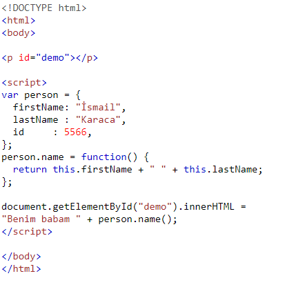

JAVASCRIPT NESNE KAVRAMI
*Boolean'lar nesne olabilir (new anahtar kelime ile tanımlanmışsa).
*Sayılar nesne olabilir (new anahtar kelime ile tanımlanmışsa).
*Dizeler nesne olabilir (new anahtar kelime ile tanımlanmışsa).
*Tarihler her zaman nesnedir.
*Matematik her zaman nesnedir.
*Normal ifadeler her zaman nesnedir.
*Diziler her zaman nesnedir.
*İşlevler her zaman nesnedir.
*Nesneler her zaman nesnedir.
*Temel öğeler dışındaki tüm JavaScript değerleri nesnedir.
Javascript Nesne Oluşturulması
Javascript, standart olarak Object adında bir nesne sunar. Oluşturulan nesneler de Object türündedir. Örneğin bir nesnenin oluşturulmasını şu şekilde yapabiliriz:var bankAccount = new Object();

Bu şekilde herhangi bir üyesi bulunmayan ve sadece “Object” tipine ait üyeleri barındıran bir bankAccount nesnesi oluşturmuş olduk. Bu nesneyi daha basit bir şekilde aşağıdaki gibi tanımlayabiliriz.
var bankAccount = {};
Yani Object anahtar kelimesini kullanmadan da tanımlama yapmak mümkündür.
Nesnelere Property eklenmesi
Oluşturduğumuz nesnelere property eklenmesi işlemini aşağıdaki şeklide gerçekleştirebiliriz.var bankAccount = {};
bankAccount.number = 114521;
nesnelere bir değer veya fonksiyonu property olarak belirleyebiliriz. Bir property eğer bir fonksiyonu işaret ediyorsa ona metod diyebiliriz.
Örnek
var bankAccount = {}; bankAccount.number = 114521;
bankAccount.owner = "seyma";
bankAccount.balance = 500;
bankAccount.details = function () {
return "Account: " +this .number +
" belongs to " + this .owner +
"\nBalance: " + this .balance;
};
Yukarıda tanımladığımız bankAccount nesnesine ait “details” isimli property bir metoddur. Metodlar içerisinde kullanılan this anahtar kelimesi metodun ait olduğu nesneyi ifade eder. Bu sebeple yukaridaki “details” metodu içerisinden diğer üyelere this anahtar kelimesi ile ulaşabilmekteyiz. Metod içerisinden this anahtar kelimesini kullanmadan bir üyeye erişmeye çalışırsak hata ile karşılaşırız.
Nesne Üyelerinin Oluşturma Sırasında Eklenmesi
Nesneleri oluşturduktan sonra üyelerin belirlenmesi mümkün olduğu gibi, nesne oluşturulurken üyelerinin belirlenmesi de mümkündür. Kodun temiz olması açısından kullanılabilecek bir gösterim olarak değerlendirilebilir.Örnek
var bankAccount = {;
number = 114521;
owner = "seyma";
balance = 500;
details = function () {
return "Account: " +this .number +
" belongs to " + this .owner +
"\nBalance: " + this .balance;
};
Constructor(kurucu metod) Kullanılması
Yukarıda tanımladığımız nesne oluşturma şeklini tekrar hatırlayalım. Basit haliyle bir nesnenin oluşturulması şu şekildeydi.var bankAccount = {};
Bu nesneye bir constructor eklemek istediğimizde ne yapmamız gereken şudur:
var bankAccount = function (number, owner, balance){};
Bu fonksiyon “{}” parantezlerden hemen önce belirlenmiştir. Javascript ortamında construstor fonksiyonlar property’leri this isimli nesneye atarlar. Javascript ortamındaki constructor fonksiyonlar C# veya Java’daki sınıflara benzerler. Constructor kullanarak yeni bir nesne oluşturup o nesneye
Örnek
var BankAccount =function () (number, owner, balance){
this.number = number,
this.owner = owner,
this.balance = balance,
this.details = function() {
return "Account: " + this.number +
" belongs to " + this.owner +
"\nBalance: " + this.balance;
};
};
Oluşturduğumuz bu nesneyi şu şeklide kullanabiliriz.
var myAccount = new BankAccount(914521, "Bayram Üçüncü";, 500);
Constructor fonksiyonu tanımladıktan sonra nesne örneğinizi oluşturmak için “new” operatörünü kullanabilirsiniz. Oluşturduğunuz bu nesne örneğinin property’lerine ulaşabilirsiniz.
Nesnelerin Prototiplerinin Kullanılması
Javascript Object tipinde bulunan prototype adlı özel bir metod, tüm nesnelerde bulunur. Bu metod sayesinde nesnelere yeni property veya metodlar ekleyebilirsiniz. Constructor fonksiyonları ile kendi özel tiplerimizi oluşturmamız mümkündür. Oluşturduğumuz tipe ait iki farklı nesne örneği oluşturacağımız vakit her bir nesne örneği kendi property kümesini bünyesinde barındırır. Bu durum, veri tutucu property’ler için makul görünse de metodlar için bir sorun haline gelebilir.Metodlarımızı oluşturduğumuz tip içerisinden ayırabiliriz.
Prototype kullanılmadan
Örnek-1
var Rectagle = function (x,y) {
this.x = x;
this.y = y;
this.Area = function() { return x*y; };
};
Prototype kullanarak
Örnek-2
var Rectangle =function (x, y) {
this.x = x;
this.y = y;
};
Rectangle.prototype = {
Area: function() { return (this .x * this .y); }
};
Örnek-2 de alan hesaplayıcı metod olan Area metodu Örnek-2 de tipin prototype metoduna tanımlanmıştır.
Bu bize ne fayda sağlamıştır? Örnek-1 de constructor içinde tanımlanan fonksiyon için her Rectangle nesnesi oluşturulduğunda bellekte anonim bir fonksiyon oluşturulacak ve yer tutacak. Ancak Örnek-2 de durum farklı olacaktır. Prototype property’ler static olduklarından her Rectangle nesnesi prototype içine tanımlanan metodları referans olarak görecektir.
Ayrıca Rectange tipine ait değer tutucu (x,y) üyeler ve fonksiyonlar ayrılmış oldu. Bu ayrımı farklı Javascript dosyalarına bile dağıtmak mümkündür.
Prototype kullanımı öncelikli olarak performans artışı sağlamakla birlikte kodun okunabilirliğini de arttırmak açısından faydalı olmaktadır.